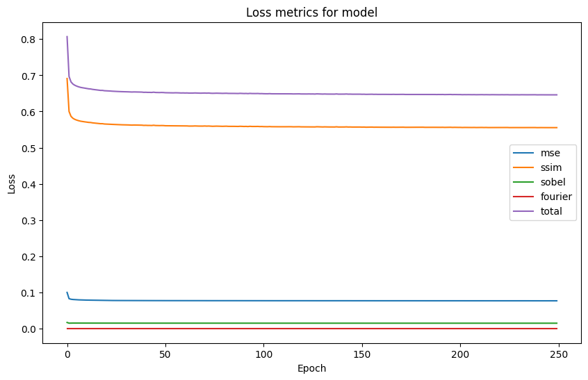
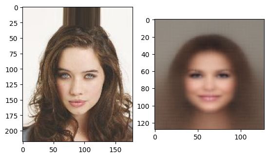

Requirement already satisfied: pytorch-msssim in c:\users\dominik danda\appdata\local\packages\pythonsoftwarefoundation.python.3.11_qbz5n2kfra8p0\localcache\local-packages\python311\site-packages (1.0.0)
Requirement already satisfied: torch in c:\users\dominik danda\appdata\local\packages\pythonsoftwarefoundation.python.3.11_qbz5n2kfra8p0\localcache\local-packages\python311\site-packages (from pytorch-msssim) (2.2.2+cu121)
Requirement already satisfied: filelock in c:\users\dominik danda\appdata\local\packages\pythonsoftwarefoundation.python.3.11_qbz5n2kfra8p0\localcache\local-packages\python311\site-packages (from torch->pytorch-msssim) (3.15.4)
Requirement already satisfied: typing-extensions>=4.8.0 in c:\users\dominik danda\appdata\local\packages\pythonsoftwarefoundation.python.3.11_qbz5n2kfra8p0\localcache\local-packages\python311\site-packages (from torch->pytorch-msssim) (4.12.2)
Requirement already satisfied: sympy in c:\users\dominik danda\appdata\local\packages\pythonsoftwarefoundation.python.3.11_qbz5n2kfra8p0\localcache\local-packages\python311\site-packages (from torch->pytorch-msssim) (1.12.1)
Requirement already satisfied: networkx in c:\users\dominik danda\appdata\local\packages\pythonsoftwarefoundation.python.3.11_qbz5n2kfra8p0\localcache\local-packages\python311\site-packages (from torch->pytorch-msssim) (3.3)
Requirement already satisfied: jinja2 in c:\users\dominik danda\appdata\local\packages\pythonsoftwarefoundation.python.3.11_qbz5n2kfra8p0\localcache\local-packages\python311\site-packages (from torch->pytorch-msssim) (3.1.4)
Requirement already satisfied: fsspec in c:\users\dominik danda\appdata\local\packages\pythonsoftwarefoundation.python.3.11_qbz5n2kfra8p0\localcache\local-packages\python311\site-packages (from torch->pytorch-msssim) (2024.6.1)
Requirement already satisfied: MarkupSafe>=2.0 in c:\users\dominik danda\appdata\local\packages\pythonsoftwarefoundation.python.3.11_qbz5n2kfra8p0\localcache\local-packages\python311\site-packages (from jinja2->torch->pytorch-msssim) (2.1.5)
Requirement already satisfied: mpmath<1.4.0,>=1.1.0 in c:\users\dominik danda\appdata\local\packages\pythonsoftwarefoundation.python.3.11_qbz5n2kfra8p0\localcache\local-packages\python311\site-packages (from sympy->torch->pytorch-msssim) (1.3.0)
Note: you may need to restart the kernel to use updated packages.
[notice] A new release of pip is available: 24.0 -> 24.2
[notice] To update, run: C:\Users\Dominik Danda\AppData\Local\Microsoft\WindowsApps\PythonSoftwareFoundation.Python.3.11_qbz5n2kfra8p0\python.exe -m pip install --upgrade pip
import torchimport torch.nn as nnimport torch.nn.functional as Fimport torch.optim as optimimport numpy as npimport torchvision.transforms as transformsimport matplotlib.pyplot as pltimport osimport randomimport copyfrom PIL import Imagefrom scipy.stats import pearsonrfrom pytorch_msssim import ssim, ms_ssimfrom torch.utils.data import DataLoader, random_split, TensorDataset, Datasetfrom tqdm import tqdm
# Global Parametersdata_ratio =0.25# How much of the full dataset to use for training.batch_size =64# Number of images to process at once.learning_rate =0.0001# Learning rate for the optimizer.num_epochs =250# Number of epochs to train for.loss_weights = [1, 1, 0.07, 0] # Weights for each metric: [MSE, SSIM, Sobel, Fourier]label_length =16# Number of labels for training.
# Loss Function Definitionclass MultiMetricLoss:def__init__(self, weights=None):# Weights for each metric: [MSE, SSIM, Histogram, Correlation, Sobel, fourier]if weights isNone:self.weights = loss_weightselse:self.weights = weightsdef mse_loss(self, image1, image2):return F.mse_loss(image1, image2)*self.weights[0]def ssim_loss(self, image1_tensor, image2_tensor): ssim_index = ms_ssim(image1_tensor, image2_tensor, data_range=1,win_size=3)return (1.0- ssim_index)*self.weights[1] # SSIM ranges from 0 (completely different) to 1 (identical)def sobel_loss(self, image1, image2):# Sobel filters to detect edges (on grayscale version of images) sobel_x = torch.tensor([[1, 0, -1], [2, 0, -2], [1, 0, -1]], dtype=torch.float32) sobel_y = torch.tensor([[1, 2, 1], [0, 0, 0], [-1, -2, -1]], dtype=torch.float32) sobel_x = sobel_x.view(1, 1, 3, 3).to(image1.device) sobel_y = sobel_y.view(1, 1, 3, 3).to(image1.device) image1_gray = image1.mean(dim=1, keepdim=True) image2_gray = image2.mean(dim=1, keepdim=True) edges1_x = F.conv2d(image1_gray, sobel_x, padding=1) edges1_y = F.conv2d(image1_gray, sobel_y, padding=1) edges1 = torch.sqrt(edges1_x **2+ edges1_y **2) edges2_x = F.conv2d(image2_gray, sobel_x, padding=1) edges2_y = F.conv2d(image2_gray, sobel_y, padding=1) edges2 = torch.sqrt(edges2_x **2+ edges2_y **2)return F.mse_loss(edges1, edges2)*self.weights[2]def fourier_loss(self, image1, image2):# Compute the Fourier transform of the images image1_fft = torch.fft.fft2(image1) image2_fft = torch.fft.fft2(image2)# Compute the magnitude of the Fourier transform image1_mag = torch.abs(image1_fft) image2_mag = torch.abs(image2_fft)# Compute the MSE between the magnitudesreturn F.huber_loss(image1_mag, image2_mag)*self.weights[3]
# Dataloader Definitionclass JpgDataset(Dataset):def__init__(self, root_dir, transform=None):""" Args: root_dir (string): Directory with all the JPG images. transform (callable, optional): Optional transform to be applied on an image. """self.image_files =sorted(os.listdir(root_dir))self.labels = []withopen("celeba/list_attr_celeba.csv", 'r') as f: f.readline()for i inself.image_files: l = f.readline() l = l.split(',') l.pop(0) l[-1] = l[-1][0] l = [int(i) for i in l] l = torch.tensor(l)self.labels.append(l)self.root_dir = root_dirself.transform = transformdef__len__(self):returnlen(self.image_files)def__getitem__(self, idx): img_name = os.path.join(self.root_dir, self.image_files[idx]) image = Image.open(img_name).convert("RGB") # Convert image to RGB label =self.labels[idx] filename =self.image_files[idx]ifself.transform: image =self.transform(image)return image, label , filename# Define your transformationstransform1 = transforms.Compose([ transforms.ToTensor(), transforms.Resize((128,128)), transforms.Normalize(mean = [0,0,0], std = [1,1,1])])# Path to the directory containing JPG filesroot_dir ='celeba/img_align_celeba/'# Create the datasetdataset = JpgDataset(root_dir=root_dir, transform=transform1)# Create the DataLoaderdataloader = DataLoader(dataset, batch_size=batch_size, shuffle=True, num_workers=0)# Define the sizes of each subsettrain_size =int(data_ratio *len(dataset)) # Split the datasettrain_dataset, garbage_dataset = random_split(dataset, [train_size, len(dataset) - train_size])# Create DataLoaders for each subsettrain_dataset = DataLoader(train_dataset, batch_size=batch_size, shuffle=True)
# Training Loopg = generator()if torch.cuda.is_available(): g = g.cuda()g.weight_init(mean=0.0, std=0.1)optim = torch.optim.AdamW(g.parameters(), lr = learning_rate, eps=1e-6)loss_fn = MultiMetricLoss()epochs = num_epochsstate_dict = []state_dict.append(g.state_dict())torch.save(state_dict, 'model_weights/0.pth')losses = {}losses['mse'] = []losses['ssim'] = []losses['sobel'] = []losses['fourier'] = []losses['total'] = []for e inrange(epochs): running_loss_total =0 running_loss_mse =0 running_loss_ssim =0 running_loss_sobel =0 running_loss_fourier =0# Learning rate decayif e %50==0and e !=0:for param_group in optim.param_groups: param_group['lr'] = param_group['lr'] *0.75print("Learning rate reduced to: ", param_group['lr'])print('Epoch: ', (e +1), ' of ', epochs)print("Epoch Progress: ")for i,j,l in tqdm(train_dataset, ascii=' ░▒▓'):if torch.cuda.is_available(): i = i.cuda() j = j.cuda() j = j.float() k = g(j) loss =0 mse = loss_fn.mse_loss(k,i) ssim = loss_fn.ssim_loss(k,i) sobel = loss_fn.sobel_loss(k,i) fourier = loss_fn.fourier_loss(k,i) loss += mse loss += ssim loss += sobel loss += fourier running_loss_total += loss.item() running_loss_mse += mse.item() running_loss_ssim += ssim.item() running_loss_sobel += sobel.item() running_loss_fourier += fourier.item() optim.zero_grad() loss.backward() torch.nn.utils.clip_grad_norm_(g.parameters(), max_norm=5, foreach=True) optim.step() losses['mse'].append(running_loss_mse/len(train_dataset)) losses['ssim'].append(running_loss_ssim/len(train_dataset)) losses['sobel'].append(running_loss_sobel/len(train_dataset)) losses['fourier'].append(running_loss_fourier/len(train_dataset)) losses['total'].append(running_loss_total/len(train_dataset))print("Loss: "+str(running_loss_total/len(train_dataset)))#print("MSE: " + str(running_loss_mse/len(train_dataset)))#print("SSIM: " + str(running_loss_ssim/len(train_dataset)))#print("Sobel: " + str(running_loss_sobel/len(train_dataset)))#print("Fourier: " + str(running_loss_fourier/len(train_dataset)))print(" ") state_dict.append(copy.deepcopy(g.state_dict()))# THIS WILL OVERWRITE ANY PREVIOUS WEIGHTS FROM PREVIOUS MODELS, CHANGE THE PATH TO SAVE WEIGHTS FROM DIFFERENT MODELS torch.save(state_dict[-1], 'model_weights/'+str(e) +'.pth')
# Plot the loss metricsplt.figure(figsize=(10, 6))for loss_type in losses.keys(): plt.plot(losses[loss_type])plt.xlabel('Epoch')plt.ylabel('Loss')plt.title('Loss metrics for model')plt.legend(losses.keys())

# Create Comparison Image# Load the model from the last epochmodel = generator()model.load_state_dict(state_dict[-1])name_list = os.listdir('celeba/img_align_celeba/')filename = random.choice(name_list)og_img = Image.open('celeba/img_align_celeba/'+filename)# Display sample original image next to generated imageplt.subplot(1,2,1) plt.imshow(og_img)plt.subplot(1,2,2)label = dataset.labels[name_list.index(filename)]label = label.float()img = model(label)img = transforms.ToPILImage()(img[0])plt.imshow(img)

# Run label though every generator epoch and save the imagesgen = generator()forfilein os.listdir('model_weights/'): filename = os.fsdecode(file) gen.load_state_dict(torch.load("model_weights/"+file, map_location=torch.device('cpu'))) fig = plt.figure(frameon=False) ax = plt.Axes(fig,[0.,0.,1.,1.]) ax.set_axis_off() fig.add_axes(ax) img = gen(label) img = transforms.ToPILImage()(img[0]) filename = filename.rsplit( ".", 1 )[ 0 ]#add leading 0s to the filename num = filename.zfill(3) ax.imshow(img ,aspect='auto') fig.savefig('gif_photos/'+str(num) +'.png') fig.clear()
# Create a gif from the imagesfrom PIL import Imagefrom PIL import ImageDrawimport glob# Create an empty list called imagesimages = []# Get the label for the imagelabel_list = label.squeeze().tolist()label_list = [int(i) for i in label_list]print(label_list)# Get all the images in the 'images for gif' folderfor filename insorted(glob.glob('gif_photos/*.png')): im = Image.open(filename) draw = ImageDraw.Draw(im) draw.text((10, 10),os.path.basename(filename).rsplit( ".", 1 )[ 0 ],(255,255,255), font_size=32) draw.text((10, 432),str(label_list),(255,255,255), font_size=32) images.append(im)last_frame = (len(images)) # Create 500 extra copies of the last frame (to make the gif spend longer on the most recent data)for x inrange(0, 50): im = images[last_frame-1] images.append(im)# Create 50 extra copies of the first frame (to make the gif spend longer on the first data)for x inrange(0, 50): im = images[0] images.insert(0,im)# Save as a GIF images[0].save('final_gifs/'+''.join(map(str, label_list)) +'.gif', save_all=True, append_images=images[1:], optimize=True, duration=50, loop=0)